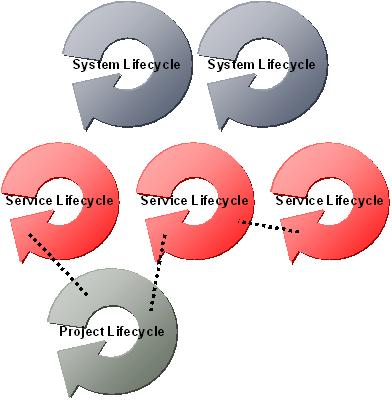
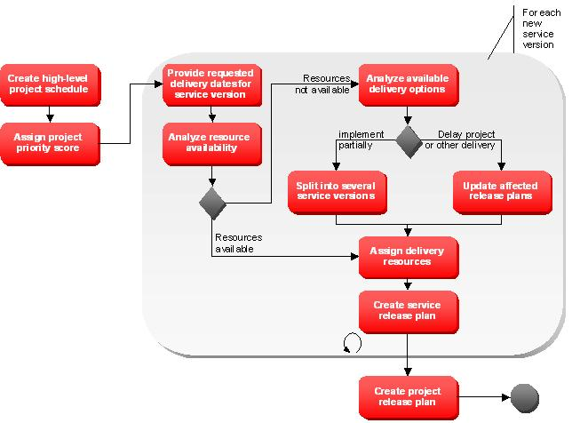

OUM |
Technique Overview |
||
Method Navigation |
Current Page Navigation |
||
|
|
||||||||
The purpose of this technique is to define best practices for SOA release planning.
As with any organization, release planning is an exercise in enterprise scalability. This means that as more and more in-flight SOA projects are progressing in parallel within an SOA environment, an increasing demand is placed on the need for effective SOA Release Planning. To be effective, SOA release planning must be efficient, scalable, and fair.
Efficiency and scale are achieved through a combination of having the correct information available to make informed decisions, as well as having this information organized in a way that it is readily available when decision making analysis requires it. The enterprise repository plays a key role in bringing the information together efficiently through an organized and linked taxonomy.
As with all delivery efforts, resources are required to deliver projects and shared assets, which imposes a capacity constraint. One of the primary purposes of SOA Release Planning is to work through capacity constraints for projects requiring the same shared, but yet to be delivered, assets with conflicting schedules and resource requirements.
In order to achieve fairness, a form of Organization and Governance must be applied during release planning. A team or individual (depending on the enterprise size) should be allocated and made responsible for SOA Release Planning. This team must be given the authority to influence enterprise project and asset delivery schedules.
When there are assets with conflicting schedules or resource requirements, the SOA Release Planning team utilizes the information available as well as a predetermined step in order to prioritize the release of shared assets and SOA projects. This team has the authority to prioritize the delivery of certain projects and assets over others, and any schedule that is still on the release plan may be impacted by the introduction of higher priority projects or assets.
SOA Project Release Plan - This technique provides a process for SOA Release Planning, and the end result is a SOA Project Release Plan. The SOA Project Release Plan is an abstract of the project plan with respect to SOA dependency management. As such the Project Release Plan contains the high-level release information on the project and its dependencies to shared assets. With the Project Release Plan, each project will publish the information needed to synchronize parallel projects having an interest in the same shared asset. At the same time, the plan is used to guide service delivery planning. By combining all SOA Project Release Plans into one view, a SOA Release Plan can be produced and be used to help portfolio management to identify and manage inflight projects.
No. |
Step | Component | Component Description |
|---|---|---|---|
1 |
Create high-level project schedule. | High-Level Project Schedule | The High-Level Project Schedule component is the project plan as you normally create it for your project. It includes estimated start date, release date, and major milestone dates. |
2 |
Assign Project Priority Score. | Enterprise Priority Score | The Enterprise Priority Score component is the priority given for the project, including the reasoning for the score. |
3 |
Provide requested delivery dates for service version. | Service Delivery Dates | The Service Delivery Dates component contains for each service that the project will utilize and for which delivery has not yet been completed, the requested delivery dates for the resulting service(s). |
4 |
Analyze resource availability. | Resources Analysis | The Resources Analysis component includes the available resources that could be used to deliver the requested service versions by the dates requested by the project. |
5 |
Analyze available delivery options. | Delivery Options Analysis | The Delivery Options Analysis component contains an analysis of possible delivery mitigations when there are not sufficient resources to deliver the service following the original schedule. |
6 |
Split into several service versions. | Service Versions | The Service Versions component is relevant if a partial implementation contingency plan is required. If this is the case, the service will be delivered in several iterations. The component includes the scope for each version. |
7 |
Update affected release plans. | Updated Release Plans | The Updated Release Plans component contains release plans for other service candidates (and projects) that are rescheduled as a consequence of the performed analysis. |
8 |
Assign delivery resources. | Assigned Delivery Resources | The Assigned Delivery Resources are the actual resources allocated to deliver the service version as part of the project delivery. |
| 9 | Create project release plan. | Project Release Plan | The Project Release Plan is the revisited/updated project plan including any adjustments needed. The project plan details with respect to SOA are added to the Enterprise Repository. |
For SOA Release Planning a new SOA Project serves as the input for the process. The project has completed the SOA Requirements Management and Service Identification & Discovery processes, and is ready to be scheduled in sequence with the shared assets it requires. The steps to perform SOA Release Planning are described in the table above, but before detailing these steps, some necessary information is provided below.
Here, the term service candidate is a shared runtime asset. This includes both a shared service, as well as a shared business process. Shared business processes represent course grained, reusable, business processes or business process segments, which may or may not be exposed as shared services. Both asset types are treated as shared enterprise assets. Further, a new service candidate is a service candidate that has been identified and justified through Service Identification resulting from the project. This service candidate should be scheduled for a release. An in-flight service candidate is a previously identified service candidate originating from a separate project that has not been realized in the form of one or more shared services (in an operational state).
SOA Release Planning is performed in iteratively, as long as there still are in-flight SOA delivery activities underway. The release plan evolves with the addition of each new SOA project introduced.
Each iteration begins with the introduction of a new project. At the point where release planning begins, the project is associated with a set of new service candidates, in-flight service candidates, as well as the services that have been assigned for reuse by the project itself. If there are no new service candidates to be realized or in-flight service candidates that will be utilized by the project, then the release plan for the project is the project specific release plan as there are no dependencies with new or in-flight service candidates.
When new service candidates are identified and attached to a project, or existing in-flight service candidates are connected to the project, then the project and the connected assets must go through an iteration of the SOA Release Planning steps. You analyze available resources and allocate them to a schedule. If resource constraints are identified you will determine the course of action to be taken to ensure the needs of the enterprise are met. Contingencies may include delivering the shared asset within the project delivery using the project’s delivery resource; partially delivering an asset to satisfy the immediate project needs; or rescheduling lower priority assets or projects to facilitate the needs of higher priority projects and assets.
After each iteration the project release plan is updated to reflect the current plans. Delivery teams for shared assets and projects proceed according to their release plan. Operations must be kept in synch with the release plan, so that they may properly prepare for additional projects and services that should be hosted in the environment as delivery activities complete. The project release plan itself is not a detailed project plan, but rather a high-level schedule which tracks the dependencies between the project and assets used as well as high-level delivery milestones (e.g., phases). The project release plan if adhered to by the various delivery teams involved ensures that the dependencies established between deliveries are received by the time they are needed.
Services have dependencies between each other, with projects and systems. SOA Release planning must coordinate the individually managed release plans for projects, systems and services.

All services hosted on the same system must be considered in the systems release plans. A system may need to change to fulfill additional tool requirements by one of the services hosted. Any change to the shared operations environment may impact other services hosted on that environment. Therefore updates on a system may require updates of several services in synchronization. Each time a system is planned to be changed or updated, the impact to each individual service hosted on that system must be further analyzed. If the service must be changed to conform to systems environment, then a new service version must be planned. The release plan of the new version must be coordinated with the availability of the new system version in development, test and production. If several versions of the same service are hosted on the same system and are impacted by the change, consider enforcing consumer migration to one version. To avoid this dependency consider parallel hosting of different system environments and retire systems as soon as all service versions hosted on that system are retired.
Services may be packaged together into the same deployment unit. All service deliveries targeted to one deployment should be synchronized for deployment. As a consequence they all have the same dates planned for interface, test, enablement and operations. In that case the same team should deliver all services packaged together.
Services and projects consuming services depend on the services to become available. Therefore project plans and service plans should be synchronized with the release plans of the services consumed. If the consumer defined by a project is not a service, then the consumer may be an application instead. To ensure availability of the consumed service, the planned and actual delivery milestones should be coordinated. If the consumer wants to start with design, all services discovered for reuse and new service candidates and new versions identified to be consumed by the project itself must have created their contracts and interfaces already. Before the consumer starts testing, all services consumed must be available for testing in the requested version. If a field test is planned prior to operations, all service versions consumed must be operational already, or at a minimum be enabled in production to be accessible by the project. For operations all service versions consumed should already have been released to production.
If a service is planned for enhancement or change, all dependent projects not yet released should be checked if they could be linked to the planned new version of the service. Depending on the business priorities projects might need to be forced to migrate to the new inflight version of the service. The goal should be to always ensure projects using the newest version of a service available in time for the projects release plan.
Effective SOA Release Planning is achieved by having the correct information available to analytically make informed decisions, rather than relying on instinct, gut feel, or the deliberation skills of the various project teams (or Lines of Business). Before we dive into the actual procedures themselves, it is important to understand the details behind the elements that will be utilized within the steps as well as the data which will result from executing them. In particular, the details around SOA Projects and Service Candidates will be provided prior to discussing the procedure details.
The project is introduced as an enterprise asset during SOA Requirements Management. During that stage, enterprise requirements and functional models are established in the enterprise repository and associated with the project. Then the project goes through the Service Identification and Discovery procedures where service candidates (and services) that will be utilized by the project, are identified and associated with the project. As the project moves through SOA Release Planning, it receives an enterprise priority score that rates its importance with respect to the enterprise, as well as its high-level scheduling information. Service candidates that are associated with the project are provided requested delivery dates by the project delivery team, which are then used in the release planning steps to determine if the requested dates for shared assets can be met. If not, the contingency steps determine the course of action. Once through SOA release planning the project will be assigned high-level schedule information. The schedule for a project or shared asset can be impacted by release planning exercises of inflight projects that have higher priority. A contingency plan may cause the release of some shared assets to be delayed and impact the projects that depend on the release of these assets.
Projects remain associated with the shared assets that they use after they become operational. This provides additional value as these associations can be used as a measurement for reuse. Further, the release schedule information attached to the project can be used to measure the cost savings achieved through reuse. Tracking projects through their lifecycle by utilizing an enterprise repository ensures that all of this information is easily accessible and measurable. It also provides a valuable operational tool as all dependencies between shared assets can be tracked.
The following are the recommended data elements that should be captured with SOA projects for each delivery iteration, i.e., for each release created by the project:
Name: This is the unique project name.
Scope: The scope of a project defines the relevant area within the enterprise for which the project is applicable. Valid values include:
Status: The status represents the current state of the project within its lifecycle. The set of available statuses can be customized for a particular business, but the defaults include:
Owner: This information is used to indicate owning organization for the project. The owner is the organization responsible for delivering the project.
Iteration: The iteration field comes into play when the project uses multiple iterations to delivery multiple project releases. The iteration indicates what is the current iteration of the project. It does not indicate an iteration within a project phase, but rather an iteration going through a full software delivery cycle. When a new iteration starts, it starts out with a status of “Proposed”, which would then begin its lifecycle by beginning with Requirements Definition, or in the case of SOA, with SOA Requirements Management.
Enterprise Priority Score: The enterprise priority score indicates the priority for the project measured at the enterprise level. This score is used to determine release planning biases when determining contingency plans if resource constraints are encountered. A higher score value indicates a lower enterprise priority (e.g., Priority 1 is the highest).
Priority Justification: This field is used to enter brief notes on how the Enterprise Priority Score was determined for the project.
Requested Release Date: This value holds the date which the business has requested the project be released into production
Planned Release Date: This value indicates the planned release date that has been assigned by the SOA Release Planning team.
Actual Release Date: The date for which the project entered operational state in production.
Start Date: The actual start date for the project, once delivery commences.
In addition the major milestones of each iteration need to be published to allow service owners to manage dependencies to dependent projects. For that purpose the following properties could be added as part of the project asset or could be used to create a special asset type for SOA project release plans:
List of new services: The list provides the names of the services that will be created as part of the project. The list should include the project priority scoring for the delivery assets of the services.
List of updated services: The list provides the names of the services the project will update throughout project delivery to enable them for reuse. For each service the corresponding change requests should be provided.
List of services reused: The list provides the names of the services the project will reuse as is. If the service is updated for reuse, the update is not delivered as part of this project but will be delivered by another project.
List of new applications: The list provides the names of new applications the project will create, if the application will be consuming or providing services.
List of updated applications: The list provides the names of applications that will be changed throughout the project to consume or provide services.
Date planned for design: Provide the date the project iteration should start with design activities. At this point in time all dependent service versions should have at least reached the defined state to ensure availability of the contract of the services.
Actual date of design: Provide the date the project iteration has started design phase.
Date planned for test: Provide the date the project iteration should start with integration testing. All dependent service versions will need to have finished service based testing prior to starting integration testing.
Actual date of test: Provide the date the project has started with integration testing.
Date planned for field test: Some project iterations will be introduced into production to start a field test before enabling the project for the enterprise. In that case the planned date when the field test is planned to be started, i.e. the project release needs to be available for field testing team in production. All dependent service versions will need to be operational already to use them in field testing. If a service version has not yet reached the operational state, the service needs to be enabled at least for the project to support field testing.
Actual date of field test: Provide the date the project iteration has started field testing in production.
Date planned for production: Provide the date the project iteration is planned to start in production. All service versions will need to have reached operational state to be able to release the project for production.
Actual date planned of production: Provides the date the project iteration has started in production.
A new SOA Project that has completed the SOA Requirements Management and the Service Identification and Discovery processes serves as the input for the SOA Release Planning Process. The project is therefore ready to be scheduled in sequence with the shared assets it requires. The steps in the process can be visualized as follows:

The first activity of the Release Planning Process is to create the high-level project schedule for the new project. This includes estimated start date, release date, and major milestone dates. This exercise ensures that the requested release date for the project has been assigned.
Calculate the Enterprise Priority Score for the project and provide the reasoning for the score. This is used to ensure that fairness is used in contingency exercises when there is a delivery resource capacity constraint.
The enterprise MoSCoW list should be used to create enterprise priority scores. The prioritization of projects should align with business strategy, cost & benefit and risks of project delivery. A scoring system similar to the service scoring as proposed in SOA Service Identification and Discovery technique will help to prioritize projects more effectively. It is important to develop a balanced priority scoring system that meets the needs and priorities of the enterprise that is both fair and balanced. The system should be refined over time as the enterprise matures with SOA adoption. In order to do this, the scoring system should be reviewed periodically (e.g., once a year), to ensure it is still capturing the needs and priorities of the enterprise with respect to SOA.
For each service that the project will utilize and for which delivery has not yet been completed, provide the requested delivery dates for the resulting service(s). The major milestones of the project as documented in the SOA project plan provide the synchronization points for the milestones of the service versions.
Determine if there are relevant resources available to deliver the requested service versions by the dates requested by the project. If the service version is maintained as part of another project, check with the project manager the availability of resources on that team.
If the resources needed for the service to be delivered are not available, then three options should be considered. If the project requires only parts of the service version to be realized and the partial implementation can be managed by the proposed delivery resources, then a partial implementation strategy can be taken. Another option is to have the project delivery team to deliver the service version as part of the project’s delivery effort. The third option is to reschedule lower priority service versions delivery efforts (and potentially dependent projects) in order to free up resources to deliver the higher priority services. If all projects share the same priority, then SOA Portfolio Management will have to work with business to determine the contingency plan.
The services that projects depend on, need to be augmented with requested release information from each project that will utilize the service. This information is used during the release planning steps to determine if requested release dates can be met for shared assets through their assigned delivery teams. If the earliest requested release dates cannot be satisfied, then contingency planning is conducted to determine the best way forward. The following additional data attributes are included with the service candidate and used for SOA Release Planning:
Date planned for contract: Provide the date the contract is planned to be defined for the service
Actual date of contract: Provide the date the contract was defined.
Date planned for interface: Provide the date the interface is planned to be available for the service
Actual date of the interface: Provide the date the interface was provided for the service.
Date planned for finishing test: Provide the date planned to finish service based testing.
Actual date of test to be finished: Provide the date the service has finished service testing.
Date planned for enablement: Provide the date planned to enable the service in production. Typically the date planned for enablement will be the same date as planned for operations. Only if the service should be tested within a field test allowing only specific consumers to access the service, the enablement date may be different from operations.
Actual date of enablement: Provide the date the service was enabled in production.
Date planned for operations: Provide the date planned to enable the service for operations.
Actual date of operations: Provide the date operations of the service was started.
If a partial implementation contingency plan is selected, then the service needs to be delivered in several iterations. As a consequence several versions of the service should be planned in order to carve the scope from the original service that will be realized in a separate release. This will have impact on the service definition including an adjustment of requirements to each version.
If other service candidates (and projects), of lower priority, are to be rescheduled then their release plans need to be updated and the changes need to be communicated to all parties affected.
If the project delivery team agrees to deliver the service version as part of the project delivery, then the delivery resources will be taken from local project resources. If one of the other two contingency strategies is implemented, another delivery team is assigned and will be responsible for the delivery of the asset by the determined release dates.
With all dependent assets being planned revisit the project plan and apply any adjustments needed. Add the project plan details with respect to SOA to the enterprise repository. This will allow other projects identifying services for reuse delivered as part of the project to understand dependencies and planned delivery milestones.
There are no templates available to assist with this technique.
This technique is recommended for use in the following OUM tasks:
| Task | Usage |
|---|---|
| Use this technique to create the Software Release Management Plan for shared assets. | |
| Use this technique to understand how to define the deployment of services. | |
| For SOA engagements, this technique defines best practices for SOA release planning. | |
| Use this technique to define how to perform SOA release planning. |
This section is not yet available.

Copyright © 2006, 2016, Oracle and/or its affiliates. All rights reserved.